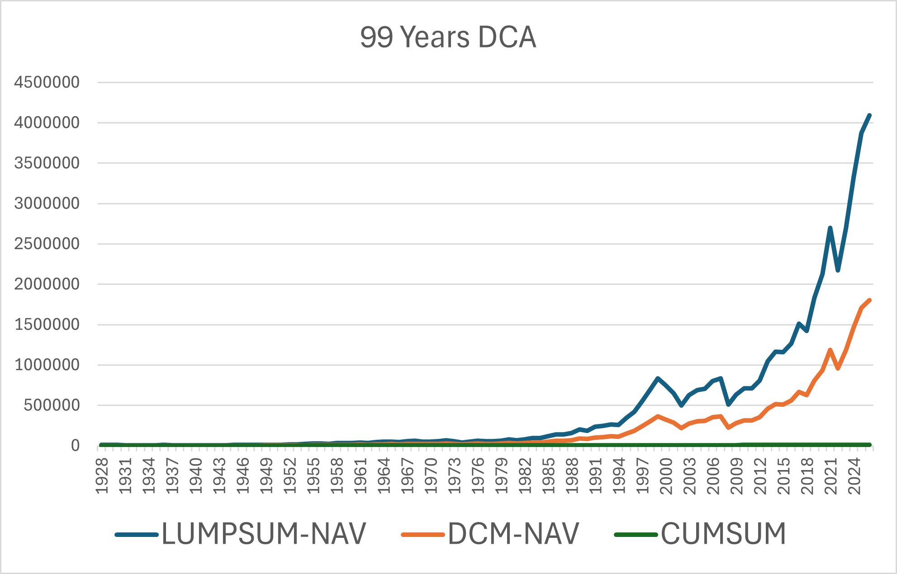
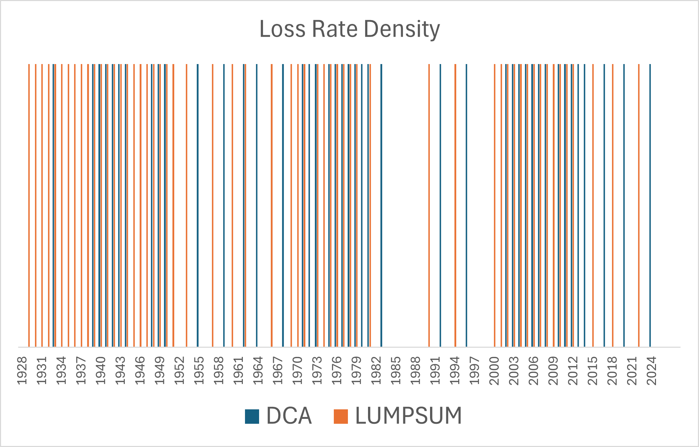

<h3>China 50 convertible bonds</h3>

<figure>
    
    <figcaption> </figcaption>
</figure>

<h3>US factor investing</h3>

<figure>
    
    <figcaption> Large Cap + Growth + Momentum Factor </figcaption>
</figure>

<h3>US retirement plan</h3>

Pending Upload

<h3>Dollar-Cost Averaging</h3>
<figure>
    
    <figcaption>  </figcaption>
</figure>
<figure>
    
    <figcaption> Loss rate density: number of years below high-water mark, Lump sum: 57%, DCA: 43% </figcaption>
</figure>

